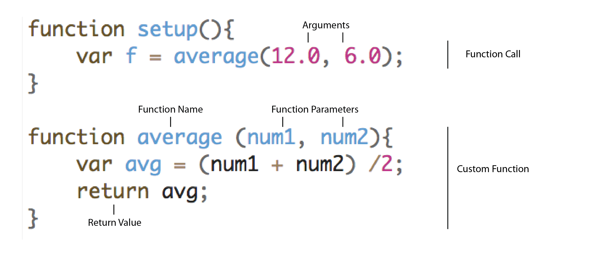

Shiffman - 5.1 Function Basics - p5.js
Shiffman - 5.2 Function Parameters and Arguments - p5.js
Shiffman - 5.3 Functions and Return - p5.js
In the terminology of software, the word abstraction refers to hiding details in order to focus on the result.
The interface of the wheel and pedals in a car allows the driver to ignore details of the car’s operation such as firing pistons and the flow of gasoline. The only understanding required by the person driving is that the steering wheel turns the vehicle left and right, the accelerator speeds it up, and the brake slows it down.
The idea of abstraction is essential to writing software. In p5, drawing functions such as line(), ellipse(), and fill() obscure the complexity of their actions so that the author can focus on results rather than implementation.
Encapsulating code in a function makes it both more modular, and easier to reuse. Code that is modular is easier to organize and debug. Functions are also reusable-- you might include functions that you wrote in one assignment to start the next.
When you create functions, you can call them, sometimes passing parameters, and they return values (or void), just like p5 native functions like fill() or ellipse(). So of course, we can’t use function names that are already taken.
When we write rect(x, y, w, h); in our code, that's a function call. In that case, the function that's being called is one of p5's native functions. However, we can also call functions that we create ourselves. We've technically already done this -- setup() and draw() are special functions that p5 looks for, as our the interrupt functions like mouseClicked() that we used. But in addition to that, we can invent our own functions and call them whenever we like.
Identify each function call in the code snippets below.
Some functions may only perform a drawing operation and might not return a value, but many functions do. For each function below, identify the return value.
Taking what we've learned about abstracting complexity with functions, let's return to our screen saver example and break up our draw() function into 3 parts. This will require us to first create 3 new functions, then move the relevant lines of code out of draw() and into our custom functions. Next, we need to make sure to call those functions from within draw(). p5's special functions like setup(), draw(), preload() and mousClicked() all have special rules for when they are called. But since p5 doesn't know anything about our new custom functions, we need to call them ourselves (or else nothing happens!).
Solution: Notice that the background() function call passes an argument (a '0' in this case), while our custom function calls do not. That's because the functions we defined expect no arguments. Next, we'll talk more about function arguments and how we can reuse functions with diffferent arguments to get different results. For now, try commenting out your 3 new functions independently to see how their behaviors work.
Here's another great reason for using functions. For making similar shapes, coding each one individually gets tedious.
The two eyes in the above example are drawn at different positions, but otherwise they are very similar. It would be better if we could reuse parts of this code instead of drawing each shape from scratch each time. But if we just had an eye() function that did the same thing every time with absolute coordinates, that wouldn't give us two distinct eyes but rather the same shapes drawn on top of each other. Instead, we can customize the input of the eye() function to accept parameters like eye(x,y), representing the x and y coordinates of the center point of the eye. Our custom eye(x,y) function can then use relative coordinates to build the eye shape around the x,y coordinates it received.
Correspondingly, however, we need to make sure that our function call agrees with our function definition; in other words, since our function is expecting 2 parameters, we need to call it with 2 arguments.
The code below does the same as the code above, but abstracts the idea of an "eye" to its own function. It takes two parameters, the x and y coordinates of the center point.
Try changing the function so that it expects a third parameter in the eye() function, make that parameter change the fill color of the second ellipse.
Now, try making a for() loop that draws 10 eyes.
Some of p5's native functions, like rect() or line() or ellipse() have no return value; their output is rendering a shape to the canvas. Other native functions, like random() or round() do have return values, in other words, they resolve to a number. That means we can use them in different ways. For example, we can write stroke(random(10)) which will give us a random stroke value between 0 and 10. But we can't write stroke(line()) because the line() function does not return a value.
Similarly, when we write custom functions, it's up to us whether or not we want our functions to return a value.